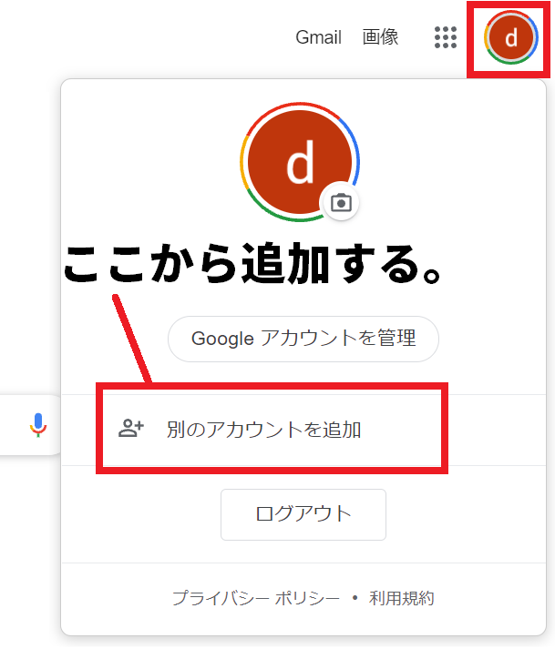
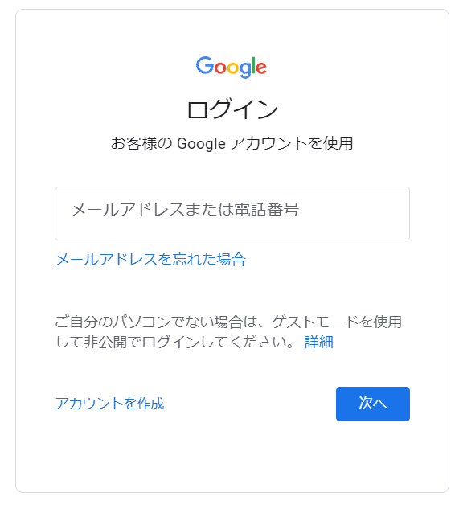
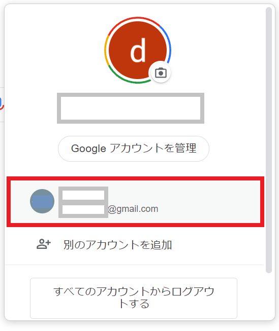
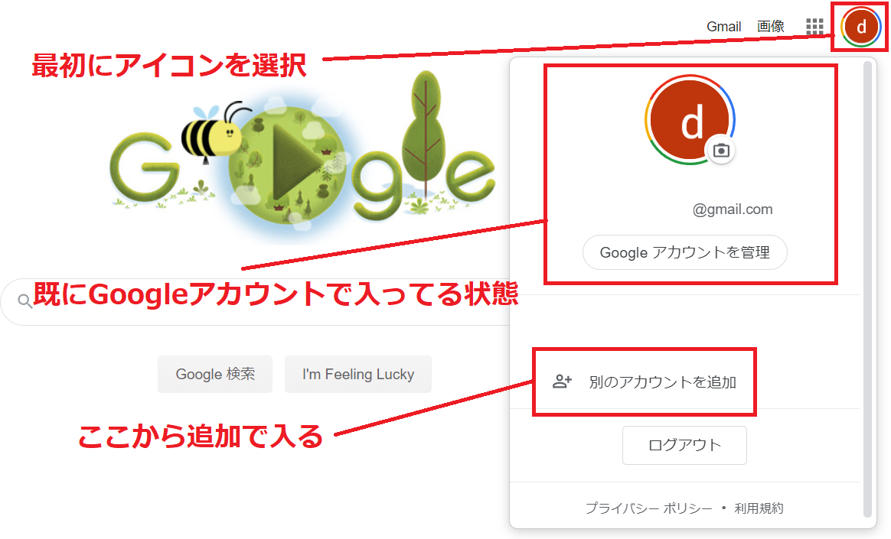

Gmailは無料でメールアドレスが持てるフリーアドレスの１つになりますが、 実は簡単に複数のアドレスを追加して作ることが出来ます。
最初にGmailを作った時の要領と一緒で、登録用ページから新しいGoogleアカウントを作るだけになります。
注意点としては、１つのデバイス（PC、スマホ）で 一気に複数のGoogleアカウントを作るとエラーになり一定期間作れなくなってしまうので気を付けましょう。 家族用やサブアカウント用として3つぐらい迄なら問題なく作れるでしょう。
その他、Gmailには年齢制限があって12歳以下の生年月日でアカウントを作ろうとすると、やはり同様にエラーになります。この場合も一定期間Gmailが作れなります。
このページでは、「Googleアカウントを複数作る方法」と、マルチログイン機能などによる管理方法について解説をしています。
2つ、3つとGmail（Googleアカウント）を追加で作るには、通常通り「Googleアカウント」を作るだけで大丈夫。
最初にGmailを作った時と同様に、Googleアカウントの作成ページに入って下さい。
最初のGoogleアカウントの作成と同じで「氏名」「Gmailアドレス」「パスワード」 を各欄に入れてください。
「氏名」については登録後にも変更が出来ます。
この、ここで作るGmailアドレスはGoogleアカウントにログインする際のユーザーIDとなります。 そして後々、変更することが出来ません。
パスワードも氏名と同じく後から設定画面で変更することが出来ます。
入力をしたら「次へ」を選択しましょう。 最初のページの登録はここまでで完了となります。
次の画面では、主にパスワードを忘れてしまったり、 他人がGoogleアカウントにログインした場合の 連絡先となるセキュリティ用の設定を行います。生年月日以外は省略可となっています。

電話番号の入力については省略が可能になっています。入力しない場合は空欄のままにしておきましょう。電話番号も後で追加登録や変更が出来ます。
再設定用のアドレスも省略が可能になりいます。 設定画面から追加や変更が出来ます。
生年月日についても設定画面から変更が出来ます。
これだけでGoogleアカウント（Gmail）が作成できます。
ユーザー名（Gmail）とパスワードは今後のログインの際に入力をしますので、 忘れないよう、メモをするなりして管理しておきましょう。
次に2つ同時にGoogleアカウントを管理する方法について説明します。
パソコンの場合、Googleホームぺージの右上から「Googleアカウント」のメニューをクリックし、 さらに出てきた画面にある「別のアカウントを追加」をクリックすることで追加できるようになります。

「別のアカウントを追加」をクリックすると、ログイン画面が出てきますので、そのまま新しく作ったGoogleアカウントで入ってください。

すると新しいアカウントが追加されています。切替えしたい時は、該当するアカウントをクリックするだけで切替えが完了します。

スマホの場合やGmailのアプリでも、同じ要領でGoogleのホームぺージからアカウントの変更ができます。
Googleアカウントは年齢制限があります。そのため年齢制限より低い生年月日で登録を実施しようと した場合、一旦アカウント作成が出来ない状態になってしまいます。
再度、同じパソコンからアカウント登録が出来るようになるまで、かなりの日数がかかりますので 複数作るからと言って生年月日をアバウトに入れないようにしましょう。
複数のGoogleアカウントを登録できた場合、Googleのメインページから「別のアカウントを追加」するだけで 同時に入ることが出来ます。


demiglaze
Web制作を始めて約19年になります（HTML/css、Photoshop、Webマーケティング）。2005年から当サイトの運営を開始。 これまでに300個以上のドメインを取得、10社を超えるレンタルサーバーを利用してきました。